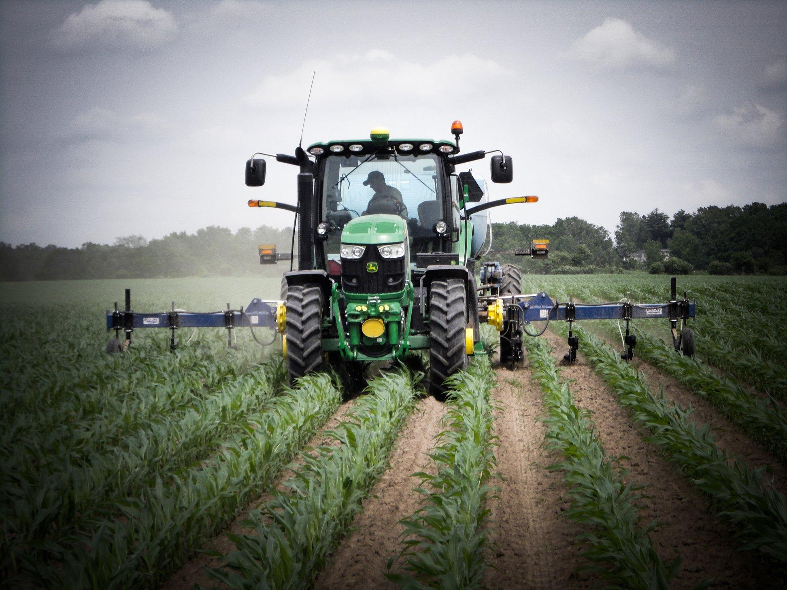

À propos
Une entreprise agricole sénégalaise
Une exploitation sérieuse, au cœur de Tamba
TABADIAN AGRO BUSINESS est une entreprise agricole installée à Tamba, Dialakoto. Elle cultive l'arachide et le maïs et fait arriver ces produits jusqu'à votre table.

Qualité
Un suivi attentif de la semence à la récolte.
Sérieux
Des engagements tenus, une relation de confiance.
Respect de la terre
Préserver le sol pour les saisons à venir.
Satisfaction client
Une réponse rapide et des produits à la hauteur.

Banding Drame
Investisseur agricole, Banding Drame dirige TABADIAN AGRO BUSINESS avec une conviction : une agriculture sérieuse crée de la valeur pour toute la région.
Le contacterLe cycle d'une campagne
De la préparation du sol à la livraison, voici comment nos cultures avancent pendant l'hivernage.
Préparation
Labour et préparation du sol avant les pluies.
Semis
Semis dès l'installation de la saison des pluies.
Entretien
Désherbage et suivi régulier des parcelles.
Récolte
Récolte à maturité, au bon moment.
Séchage et stockage
Séchage, tri puis conditionnement pour la vente.